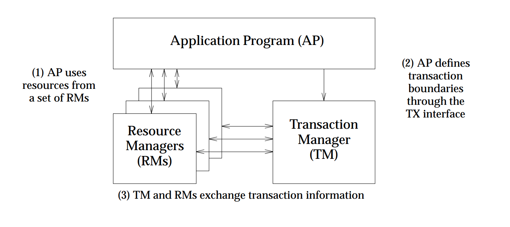
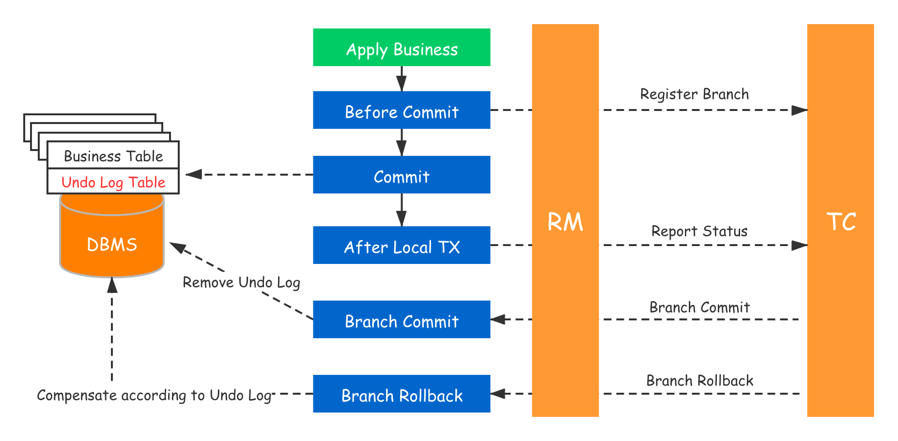
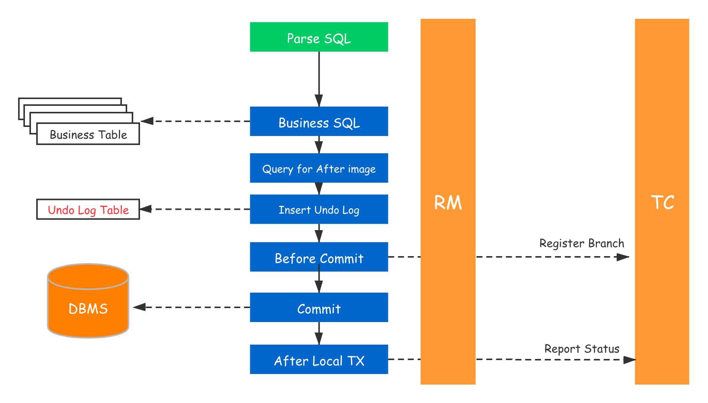
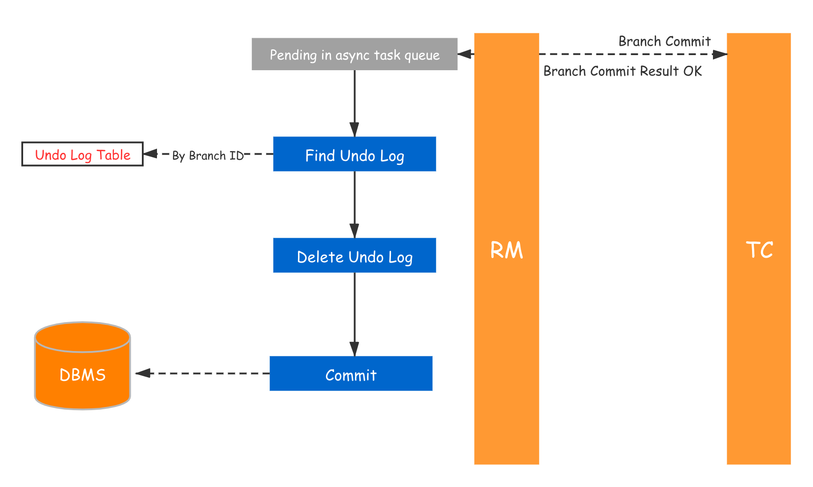
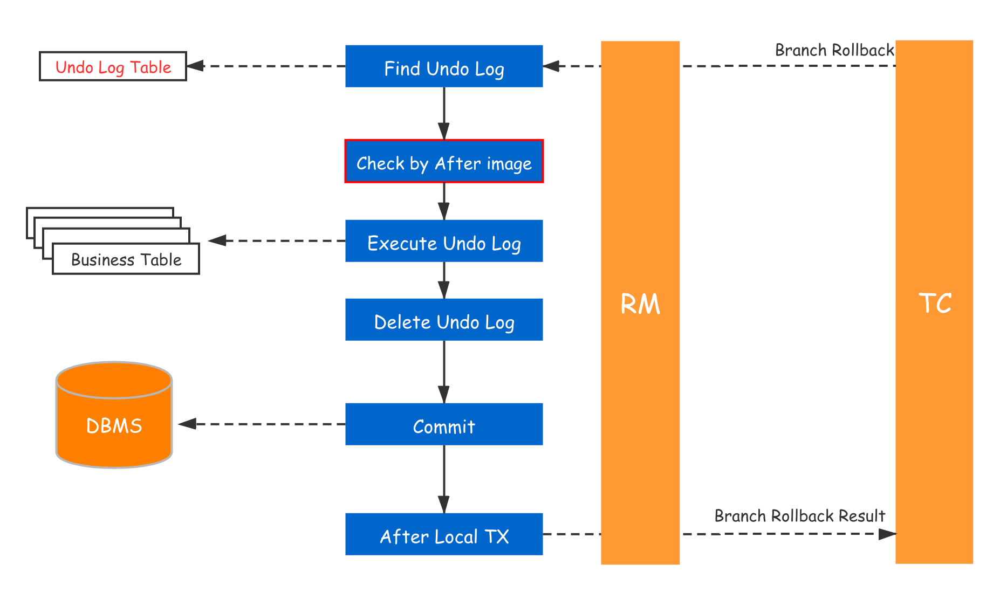
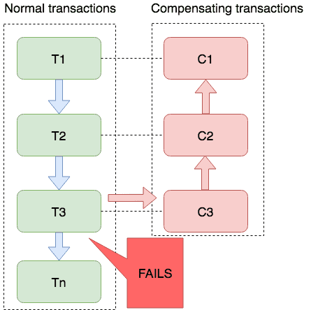
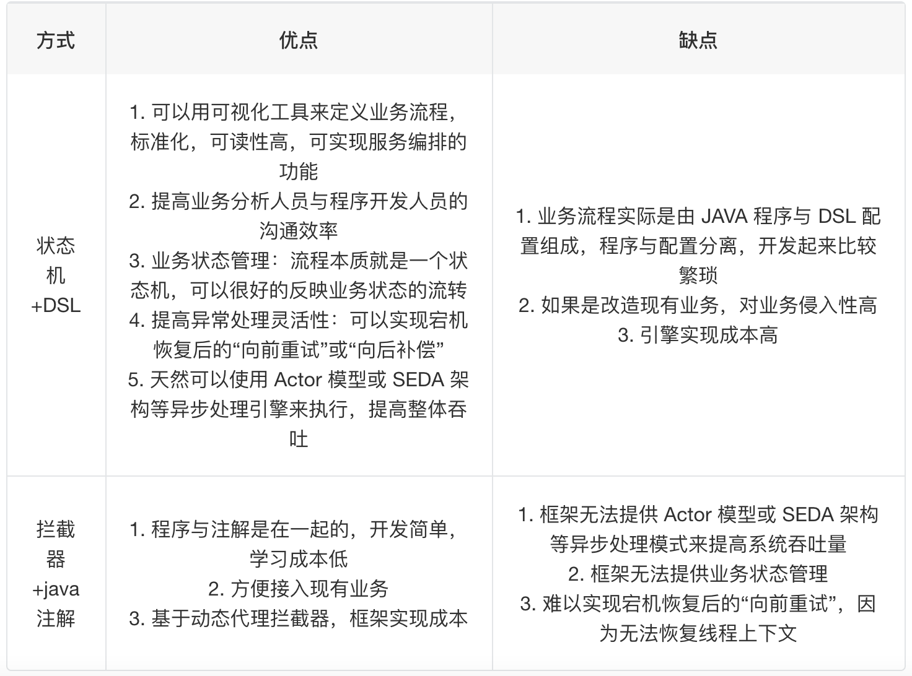

Seata与分布式事务方案
对于分布式事务的基础理论已经有启过一篇聊聊分布式事务，这一篇主要将工业实践，从主流的中间件入手，掰开聊聊分布式事务框架。
背景
对于大量垂直分库划分服务的微服务架构来说，和对微服务架构的第一原则相似，我们要尽量避免分布式事务。而工业上追求的最终一致性的常见方案有：
- TCC
- SAGE
- XA
- MQ
而Seata作为事务框架做了以上支持下还提供了AT(Automatic Transaction)模式提供选择，本文主要从AT事务展开讲解并对各类方案进行对比并对场景进行分析。
原理介绍
整体架构借鉴的是DTP(Distributed Transaction Processing)模型，我们可以理解为其作为XA的设计基础，Seata将其进行了应用层的抽象实现。

既然整体模型和XA像我们为什么不使用XA呢？这里有几个问题：
- 数据库的基础支持（Mysql5.7虽然有支持但是相当不稳定）
- 协议本身的问题，因为协议是数据层的，应用层无法感知，而RM中出现任何问题（超时、悬挂、死锁）应用层无法插手，优化困难且难以定位
- 社区支持少，落地的方案基本是商用方案（Tuxedo/WebLogic/WebSphere 等)。
对于seata的DTP实现我们可以看下图：

我们可以看到在架构中有三个角色：
- TM(Transaction Manager)
- RM(Resource Manager)
- TC(Transaction Coordinator)
TM和RM是seats-client都支持的角色，即可从任一服务发起全局事务，而xid提供了事务的统一标识，保证各服务间的事务扩散，我们来看一个事务发起的流程：
- TM向TC开启一个全局事务并创建生成全局唯一的xid
- xid在服务链路中传播
- RM在检测到链路上的xid后向TC注册分支事务并纳入全局事务管辖
- TM向TC发起针对xid的全局提交或回滚
- TC通过xid管辖所有分支事务进行提交或回滚
而上面这个步骤不难看出，这个事务同样也是2PC甚至可以说是标准TCC的一个实现，我们再详细看具体的模式实现。
AT的实现
AT是seata主创，相对于TCC对业务代码的侵入，Seata将JDBC的数据源进行代理从而通过各个服务的本地事务来进行自动的confirm or cancel。

而通过代理数据层，可以实现所有的SQL事务的拦截与SQL的解析，从而记录下回滚日志（至undolog table）以备第二阶段的cancel使用，我们可以看看一个AT事务的生命周期：

这是一个比较全的生命周期，我们为了方便理解可以拆解成TCC的周期图（实际上，AT可以理解为自动的TCC逻辑），首先是try阶段：

对于RDBMS来说，在第一阶段我们的事务其实已经提交了，而在全局事务的上下文中，这部分数据是为提交的，这就导致了对于全局事务来说隔离级别是读未提交的，Seata默认的全局隔离级别是读已提交，而其可以指定读为提交，这里就是通过Seata代理parse SQL然后帮你改成SELECT FOR UPDATE实现的了。
而当所有分支事务完成，RM的主流程结束，此时并不需要更多的同步协同处理，只需要清理之前的undo log即可:

而如果决议是回滚，各分支事务就可以通过回滚日志进行各业务的回滚:

总结一下，通过DTP已经基本实现了事务的原子性，而数据层面上对于分布式数据来说存在中间状态(默认情况下)，所以存在数据一致的问题，对于部分已提交的分支事务是可读的，在一致性上做出了让步，而为了保证事务的隔离，这部分中间态的数据是「只读」的，这里的只读是seata事务上下文的只读，前面说到AT会代理数据连接，自然就可以做到SQL的parse，而对于任意AT事务分支，都会根据修改的数据主键上一个GlobalLock，在分支事务commit时会尝试获取资源。
这个GlobalLock我们可以简单的理解成分布式锁，这个锁是由TC维护的，执行一个Try阶段的事务分支（Client）会执行以下的操作：
- 执行本地业务SQL
- 尝试获取全局锁
- 获取到全局锁则提交本地事务，失败则重试，重试超出限制则回滚
这里有一个需要特殊说明的是@GlobalLock是默认加在@GlobalTransaction和其下链路上的，而手动指定@GlobalLock可以将可能依赖到事务进行过程中软状态数据的数据隔离，而对于不需要进行上锁或纳入事务管理的（日志/冗余记录）的可以手动@IgnoreGlobalLock将这部分行为推出seata事务周期。
以上就是从ACID角度来看的AT模式的设计和方案，对于业务接入与实现来说，因为主要实现在于DataSource Proxy & Transaction Coordinator，补偿都是自动生成的undo log，接入客户端只需要实现rpc的切面来注册发起与事务感知即可，所以接入侵入性小，单一注解即可达到一个分布式事务的支持。
TCC实现
上面我们说到AT是基于JDBC代理拦截SQL解析生成补偿SQL(undo log table)并交由全局锁维护数据写隔离来实现分布式事务的，而对于一些在DBMS以外的系统其实是无法支持相应的自动补偿的，此时我们该如何去实现支持减轻手动补偿的压力呢？
- 通过注册cancel阶段的业务回调去做补偿（我没有确认是否seata有做这方面的支持，不过一般来说都会提供相应的扩展点）。
- 选择使用更加可拓展的TCC实现。
对于第二点，本身AT就是TCC的一种实现，只需要开放对应的接口即可，这里只需要对AT模式做基本的功能裁剪即可做到支持（当然Seata也是这么干的）：
需要注意的是，裁剪后的TCC是不在GlobalLock上下文中的，你可以手动指定，也可以自己实现隔离（自己的分布式锁？）。
SAGA

对于长链路的复杂调用我们自动补偿或者要求强数据一致会带来很大的性能负担，很多时候我们只需要最终一致性的时候我们更应该选择SAGA来进行我们的事务处理。
SAGA维护了调用链路服务的状态机，在一个状态失败后，会选择尝试补偿或者回滚，这个和TCC很像，需要编码自己实现，不过整体方案对整个事务的性能消耗大大优于TCC，而业界的SAGA实现主要是两种，一种基本状态机或流程引擎通过 DSL 方式编排流程程和补偿定义，一种是基于 Java 注解+拦截器实现补偿，我们简单对比一下两种方案：

Seata是状态机和 DSL 方式编排流程实现，
通过状态图来定义服务调用的流程并生成 json 状态语言定义文件；
状态图中一个节点可以是调用一个服务，节点可以配置它的补偿节点；
状态图 json 由状态机引擎驱动执行，当出现异常时状态引擎反向执行已成功节点对应的补偿节点将事务回滚；注意: 异常发生时是否进行补偿也可由用户自定义决定
可以实现服务编排需求，支持单项选择、并发、异步、子状态机、参数转换、参数映射、服务执行状态判断、异常捕获等功能；
MQ
我们讲MQ实现事务时到底是怎么实现：

生产者
- 执行业务
- 插入消息状态表并提交
- 异步发送消息
- 更新消息状态
发送兜底定时job：
- 获取未发送状态消息记录
- 重发并更新消息状态
消费者
- 接收消息
- 消息入库
- 异步执行业务（必须幂等）并更新消息状态
消费兜底定时job：
- 获取非终态的消息记录
- 根据消息进行重试并更新状态
这以上是比较原始的mq来做分布式事务的例子，正常情况下我们有很多mq特性进行上述步骤的简化。
消息手动确认
通过消息手动确认来简化生产者消息状态机和补偿job，此时消费者消费逻辑：
- 接收消息
- 处理并执行业务
- 手动确认
当消费业务过程发生异常状态，则无法真正消费消息并将交由mq来进行重试。
半消息确认发送
通过半消息简化发送方的状态机和补偿job，此时生产者生产逻辑：
- 发送Half message
- 处理业务
- commit message
当生产业务过程发生异常状态，则消息一直是挂起状态，当超过配置定时，将由mq发起事务状态回查，而生产方需要对接回查接口，根据当前状态机告诉mq是否commit或者取消发送。
这里存在几种常见异常：
- 发消息失败
- 业务失败
- commit fail
发送失败没有意义，而当业务失败，mq回查时，我们根据状态机告知取消发送，mq将清理半消息；而当因为网络问题commit fail时，回查后会重发，确保发送方的发送是事务性的，所以也叫事务性消息。
简化后的事务消息：

没有银弹
我们无法通过拿到圣杯实现一切愿望，我们找不到银弹解决一切问题。
在对于分布式事务以及一致性的上下文中始终要有一些取舍，业务侵入性、性能损耗、数据一致性无法同时保证，我们要根据实际情况进行具体的评估实现。
| 业务侵入 | 性能损耗 | 隔离性 | 补偿方式 | 复杂链路动态路由 | 资源 | |
|---|---|---|---|---|---|---|
| MQ | 中 | 低 | 读未提交 | - | - | All |
| AT | 低 | 高 | 读未提交(可支持至已提交) | 自动补偿 | - | 支持ACID的DBMS |
| TCC | 高 | 中 | 读未提交 | 手动实现 | - | All |
| SAGA | 高 | 中 | 读未提交 | 手动实现 | - | All |
| XA | 低 | 高 | 读已提交 | 自动补偿 | 可配置化DSL+状态机 | 支持XA协议的DBMS |
参考
- Distributed Transaction Processing: The XA Specification
- at-mode wiki
- mt-mode wiki
- 《设计数据密集型应用程序》 —– Martin Kleppmann
- 源码｜详解分布式事务之 Seata-Client 原理及流程
- Seata 在微服务一致性中的探索 季敏